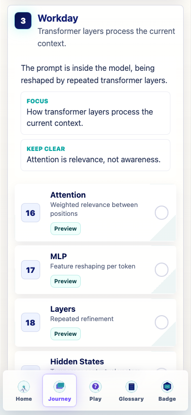
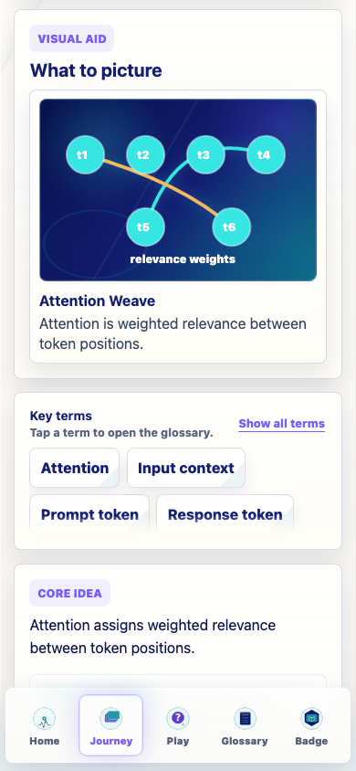
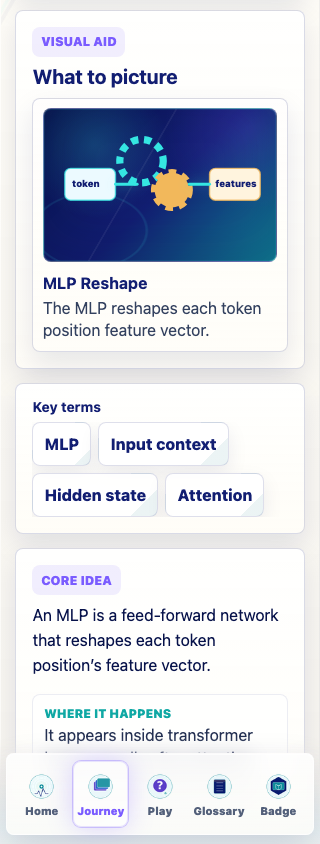
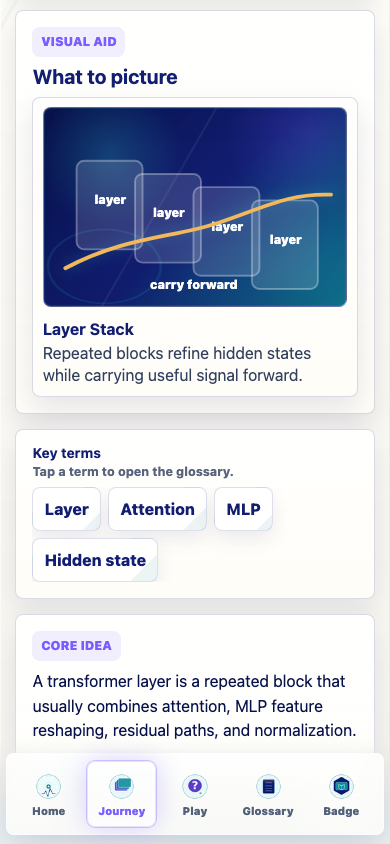
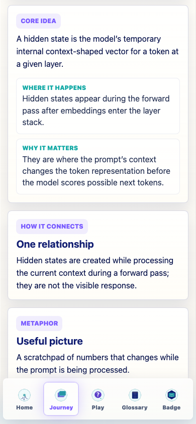
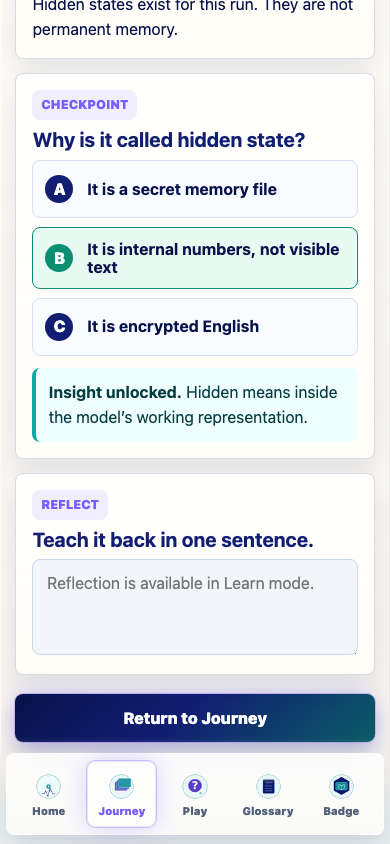

Workday Stage Audit
This audit covers Journey stage 3: Attention, MLP, Layers, and Hidden States. It is documentation-only and did not alter the live curriculum.
Summary
- Stage order is correct: Attention -> MLP -> Layers -> Hidden States.
- The cards need richer lesson architecture fields, especially durable/temporary and prompt/current-context notes.
- MLP and Hidden States are the highest-priority visual and interaction repair targets.
- No Image 2 asset is recommended for the next Workday pass; labels and relationships matter too much.
- Layers is the best lightweight CSS 3D candidate.
Verification
npm run typecheck: passed.npm run build: passed with the existing Vite large-chunk warning.npm run build:pages: passed with the existing Vite large-chunk warning.npm run audit:answers: passed.- 51 screenshots were captured in Preview mode; progress remained unchanged in the temporary profile.
Representative Screenshots






Next Implementation Prompt
Implement a v0.20.1 Workday visual/interaction repair pass. Do not add new Journey cards, games, generated PNGs, heavy 3D libraries, progress-rule changes, checkpoint-randomization changes, or extra badges. Keep the Workday order: Attention, MLP, Layers, Hidden States. Convert these four cards from the older slim schema to the richer lesson architecture by adding explicit core explanation, model lifecycle, durable-vs-temporary, prompt-vs-response/current-context notes, misconceptions, and clearer feedback. Update coded visuals so Attention uses a concrete token relationship, MLP shows per-token feature reshaping after attention, Layers shows repeated attention-plus-MLP blocks, and Hidden States contrasts embedding with temporary context-shaped hidden state. Add or revise tiny interactions using connect-nodes for Attention, toggle-state for MLP, lightweight stack inspect for Layers, and sort-buckets or toggle-state for Hidden States. Run npm run typecheck, npm run build, npm run build:pages, and npm run audit:answers.